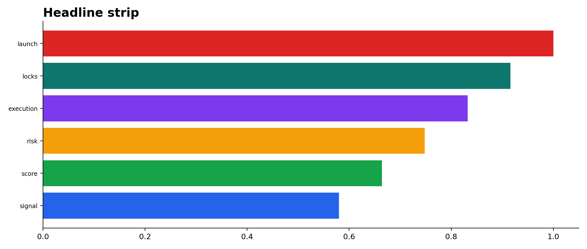
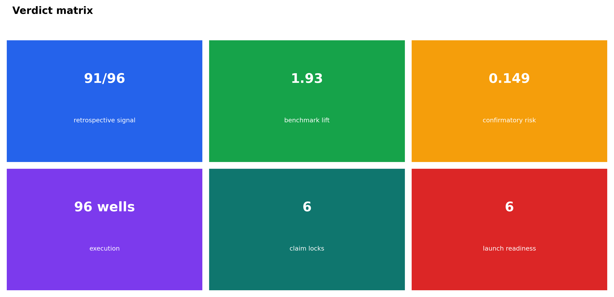
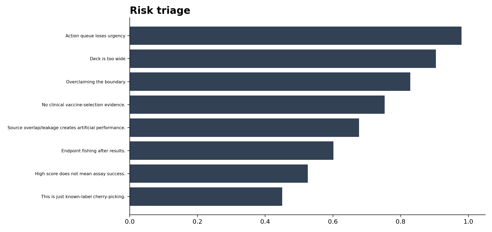
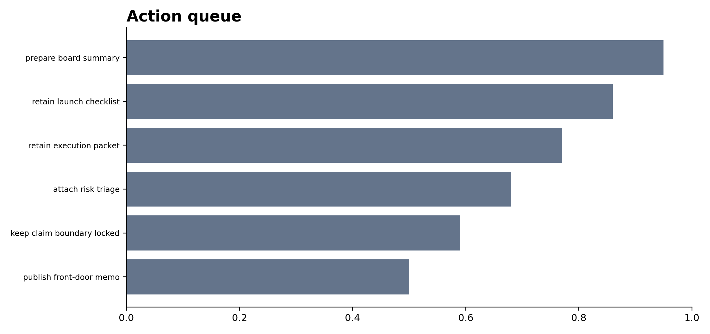
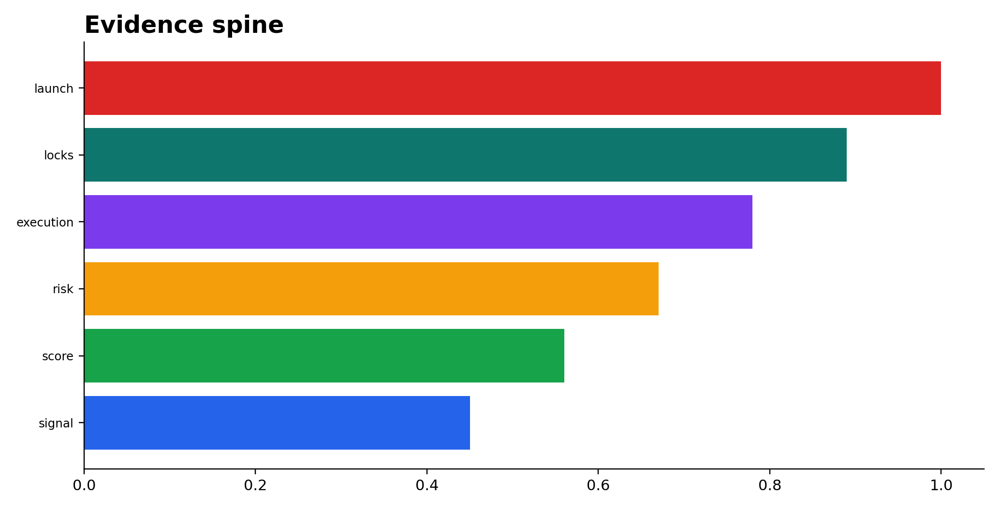
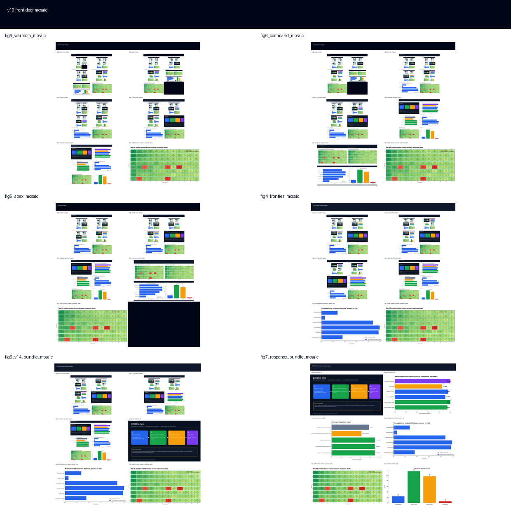

01Figures






02Headline Strip
| tile | value | meaning | use |
|---|---|---|---|
| signal | 91/96 | known-answer | signal lock |
| score | 1.93 | AUPRC recovery | benchmark lift |
| risk | 0.149 | risk sum | hard boundary |
| execution | 96 wells | execution packet | lab handoff |
| locks | 6 | claim locks | reviewer boundary |
| launch | 6 | launch checks | board readiness |
03Verdict Matrix
| verdict | dimension | metric | status |
|---|---|---|---|
| GO | retrospective signal | 91/96 | allowed |
| GO | benchmark lift | 1.93 | allowed |
| LOCK | confirmatory risk | 0.149 | boundary |
| GO | execution | 96 wells | allowed |
| LOCK | claim locks | 6 | boundary |
| GO | launch readiness | 6 | allowed |
04Risk Triage
| risk | mitigation | severity | owner |
|---|---|---|---|
| This is just known-label cherry-picking. | contained | front door | |
| High score does not mean assay success. | contained | front door | |
| Endpoint fishing after results. | contained | front door | |
| Source overlap/leakage creates artificial performance. | contained | front door | |
| No clinical vaccine-selection evidence. | contained | front door | |
| Overclaiming the boundary | claim lock + verdict matrix | contained | narrative |
| Deck is too wide | front-door compression | contained | design |
| Action queue loses urgency | ranked next steps | contained | program |
05Action Queue
| rank | action | status | notes |
|---|---|---|---|
| 1 | publish front-door memo | done | one page, one read |
| 2 | keep claim boundary locked | done | no prospective overclaim |
| 3 | attach risk triage | done | reviewer objections adjacent |
| 4 | retain execution packet | done | 120 tasks preserved |
| 5 | retain launch checklist | done | 6 checks preserved |
| 6 | prepare board summary | queued | compress to single slide if requested |
06Evidence Spine
| layer | value | meaning |
|---|---|---|
| signal | 91/96 | known-answer |
| score | 1.93 | benchmark lift |
| risk | 0.149 | risk lock |
| execution | 96 | lab readiness |
| locks | 6 | claim controls |
| launch | 6 | board readiness |
07Sources + paths
Output directory: /home/seungho/personal/THCA_data_analysis/project/results/cross_neo_kaggle_winner_playbook_2026_05_10/impact_frontdoor_v19_2026_05_11
HTML: /home/seungho/personal/THCA_data_analysis/project/papers_hub_2026_05_04/cross_neo_impact_frontdoor_v19.html
Live deploy status: ok